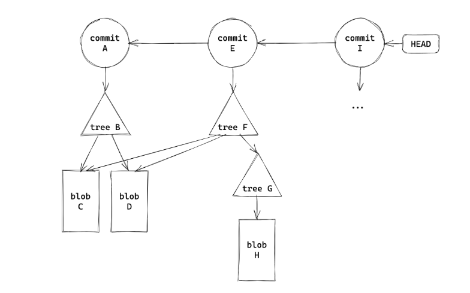

3 Git
[!AI_SUMMARY]- Summary
Git 是一款分布式版本控制系统，可以记录、管理和回溯文件的修改历史。
- Git 模型： 工作区、暂存区、提交历史、仓库。
- 基础操作： 初始化仓库、查看状态、添加修改、删除文件、提交修改、查看历史、切换分支、合并分支。
- 进阶操作： 修改提交历史、使用远程版本库、子模块、Git 结构、项目合作。
本文中，非 wsl 命令行演示截图均来自 「实用技能拾遗
[!HELP]
如果出现了下面这种界面（在
git commit时）不要慌，看看 nano。
I 什么是 Git？¶
[!INFO]
官网地址：https://git-scm.com/
分布式版本控制系统（DVCS，Distributed Version Control System）
分布式：不需要联网，在自己的机器上就可以使用
版本控制：记录、管理、回溯文件的修改历史
I.1 git 模型 ¶

上图中，我们平时进行修改的部分正是工作区 working directory ，在我们完成修改后，我们一般使用 git add --all 来将我们的修改移入暂存区 stage ，之后 git commit 提交为 commit history （这代表着一次又一次的版本，也就是 VCS 的含义了git push 更新仓库。
II 基础操作 ¶
II.1 git init¶
- git init：让当前文件夹变成 git 仓库（创建 .git 文件夹）
- git init folder：创建一个新的文件夹并初始化为 git 仓库
出现 .git 文件夹表示成功。

II.2 git staus¶
查看工作区 & 暂存区状态，我们在下面会大量使用到。文件三个类别：未跟踪（Untracked，新建
II.3 git add¶
首先创建一个新文件用于测试：
[!HELP]
如果不理解如何创建可以转看 mkdir；或者
man mkdir查看。
可以看见 1.txt 已经放入了 stage 中。
[!TIP]
一个个加自然是十分麻烦的，所以我们可以用
git add .将当前路径下文件全部加入，git add -a 或者是 --all就将所有修改都存入 stage 中。熟悉一些通配符能够为我们省去很多重复的工作。
II.4 git rm¶
我们都知道 rm 用于删除一个本地文件，而 git rm 则可以删除本地和版本库中的文件，git rm --cached 则用于删除暂存区中的文件

II.5 git commit¶
直接 git commit 我们会发现进入了一个编辑器，比较麻烦，我们可以选择 git commit -m "message" 来进行提交，其中 message 中可以任意填写，但是为了以后看见能知道干了什么还是留有一定信息比较好。
[!TIP]
关于
git commit -m "message"中的 message，为了提高其记录修改的能力，我们最好是遵循一些规范 (Angular)；当然，在""放入很多信息太不雅观了，我们一般选择git commit后在其中添加
更加详细的规范可见 angular
- type：更改类型（fix/feat/docs/refactor/perf/test/ci/...）
- 重大更改可以写 BREAKING CHANGE 或 DEPRECATED（全大写）
- scope：影响范围（可选，比如具体影响的模块等）
- summary：更改的简要描述，英文一般现在时，首字母小写句末无句号
- body：详细描述，可选
- footer：解决 issue 了可以写
Fixes #_id_或Closes #_id_

II.6 git log¶
输入 git log 可以看到修改历史

[!HELP]
这里我们进入了 vim 编辑模式，不熟悉没关系，我们以看为主，想要退出需要输入
[:]q1 即可。
- --oneline：每一个提交一行
- --graph：显示分支结构
- --stat：显示文件删改信息
- -p：显示详细的修改内容
可以看到在 commit 后面跟了一串 40 位的哈希值，是每个提交唯一的 sha-1 标识符 ，我们可以用 git show id 来显示详细信息，在不引起歧义情况下前几位即可，例如输入 git show 6b26
II.7 git checkout && git branch¶
准备工作：我们先分两次提交修改 2.txt 文件：


可以看见包括最开始的一次共有三次提交，我们只关注 line 1 line 2 即可。
那么我们想要放弃第二次的修改，即删除 line 2 的 commitgit rm --cached 自然是一个好办法，但是想要放弃的修改很多该怎么办？ ）我们使用 git checkout id 来回到某次提交历史时的状态即可：

可以看到我们的状态分支变为了 503cf8b （使用 git status 也能看到git checkout master 切换回来，当然修改也又会回来：
我们回到了 master，可以说丢失了 503cf8b 这一提交历史的修改。
[!KNOWLEDGE]
什么是 HEAD：当前工作区在提交历史中的 指针。
当然，我们可 git checkout 503cf8b 回去，但是一般人们不会记这一串感觉毫无意义的哈希值，再者请看：
他向我们发出提示，当前处于 "detached HEAD" state ，也就是说我们当前做的任何修改将不属于任何分支，当我们切换回 master 或者其他分支时，我们将会丢失这一修改（毕竟你明天八成不记得 503cf8b 是什么鬼意思）
但是从最后一行我们可以看到，HEAD is now at 503cf8b line1 于是我们可以通过 git checkout -b branch 来在建立一个新的分支，其中 branch 为新分支的名字
[!NOTE]
分支
- 创建分支
- git branch name：基于当前 HEAD
- git branch name id：基于 id 提交
- 查看分支
- git branch（带 -a 显示远程分支）
- git show-branch 更详细
- 切换分支
- git checkout name
- git checkout -b name：创建并切换
- 内容比较
- git diff branch1 branch2：比较两个分支
- git diff branch：比较工作区和分支
- git diff：比较工作区和暂存区
- 删除分支
- git branch -d branch
在两个分支上修改，在合并前二者互不干扰，有利于多人合作
- 什么是分支名：和 HEAD 一样，也是一个指针（实际上叫引用 ref）
- 可以基于 ref 使用 ~ 或 ^ 定位父提交
- ~ 表示第一个父提交，~2 表示第一个父提交的第一个父提交
- ^ 表示第一个父提交，^2 表示第二个父提交
- 一个提交可能会有多个父提交（merge commit）
II.8 git merge¶
我们在想要保留的分支上键入 git merge branch 后可以将 branch 这一分支的修改内容合并到当前分支。
[!EXAMPLE]
键入
git branch -a我们可以看到当前处于 change1 分支上（这一点我们以后不在赘述）接下来将 change 1 合并至 master 上可以看到返回了
Already up to date.

{kind=link}
{kind=link}
{kind=link}
{kind=link}
{kind=link}
{kind=link}
{kind=link}
{kind=link}
{kind=link}
合并结果一般分为三种：
{kind=link}
两种特殊 merge 方法：
{kind=link}
II.9 git tag¶
git 使用 tag 来控制版本号，例如我们键入 git tag v0.0.1 后回车，啥都没有，但是再次 git tag 可以发现：
{kind=link}
git show tag 可以展示某版本的修改内容等：

详尽的规则可查看 语义化版本 2.0.0
III 进阶操作 ¶
III.1 远程版本库 ¶
[!INFO]
git 这类的 DVCS 通过使用一个“权威”的远程版本库 (remote repository) 来实现协作，但是远程版本库也是一个普通的 git 版本库。
III.1.1 git push¶
git push 会将本地的提交推送到远程版本库，但是无法直接 push 到远程版本库检出的分支中

当我们将远程版本库更换检出分支既可以了
{kind=link}
因此远程一般使用裸版本库（--bare）
{kind=link}
可以看到主要是将 .git 文件夹中部分内容放过来了
III.1.2 git pull¶
git pull 会将远程版本库的提交拉取到本地，包含 git fetch 和 git merge 两个步骤
下面的图很好地演示了远程版本库的工作流

III.1.3 git remote set-url¶
需要时可以用下面的命令来更改远程仓库的 URL：
git remote set-url origin https://github.com/username/repo.git
III.2 submodule¶
[!QUESTION]
一个 git 版本库中包含另一个版本库会发生什么？
git 会不允许正常 add/commit，警告这样 clone 时不会包含子版本库

我们通过 git submodule 来解决。
根据 hint ，键入 git submodule add ./sub sub ，但是发现报错 fatal: 'sub' already exists in the index，这需要我们把之前暂存区的内容先清空

看到多了一个 .gitmodules 文件，打开看看

再回头看 hint 第六行就明白了 path 和 url 的意思了
[!TIP]
如果仓库托管在 GitHub 上，url 是对应链接，这样才能在克隆仓库时带上 submodule。
III.3 Git 结构 ¶
{kind=link}
在 vscode 中我们可以很清楚看到这些文件（夹）
- .git/hooks：钩子脚本，可以在特定的操作时 自动执行
- info logs 存放信息、日志
- .git/objects：存储的所有东西都在这里❗️
- 文件名是对象的 sha1，且头一个字节作为一层目录（加速文件系统）
- 通过 git cat-file -p id 可以查看对象内容（-t 查看类型）
- 三种对象类型：commit、 tree、 blob（Binary Large Object
） ，图解如下 - 
{kind=link}
III.4 项目合作 ¶
III.4.1 pull request(PR)¶
对于他人的 repo，你是没有办法直接 push 的，向其中添加代码更改都是通过 pull request 进行的，一般流程如下，还有一些其他规范。

IV 实际案例 ¶
IV.1 Push cannot contain secrets¶
一次提交 CTF 的 writeup 时出现错误：
{kind=link}
可以看到是因为 git 检测到题目所提供的用于攻击的密钥，所以阻止了我们提交。
那么平时遇到这种情况我们该如何解决？
起初我想得太简单了，直接修改了再 git commit ；还是被拒绝了；思考一番，我们的每次 commit 都会被记录下来；即使我现在这里修改了，还是将带有密钥的那一版提交了。
参考 chatgpt-4o-mini 结果：
要移除包含敏感信息的文件在 Git 提交中的记录，您可以使用 git rebase 或 git filter-branch。以下是使用 git rebase 的步骤：
IV.1.1 步骤 1：查找需要修改的提交 ¶
首先，您需要找到该提交之前的提交。在您的情况中，您要修改的提交 ID 是 xxxxxxxxxxxxxxxxxx。
IV.1.2 步骤 2：开始交互式变基 ¶
运行以下命令以开始交互式变基：
git rebase -i HEAD~n
其中 n 是您想要回溯的提交数（包括有问题的提交10。
IV.1.3 步骤 3：编辑提交 ¶
在打开的文本编辑器中，找到包含敏感信息的那一行（即 xxxxxxxxxxxxxxxxxxxpick 更改为 edit。保存并关闭编辑器。
IV.1.4 步骤 4：移除敏感信息 ¶
当 Git 停止在该提交时，您可以通过以下命令来移除敏感信息：
nano docs/CTF/ZJUCTF2024/WEB.md
在编辑器中删除相关行，然后保存并退出。
IV.1.5 步骤 5：更新提交 ¶
完成文件编辑后，运行以下命令更新该提交：
IV.1.6 步骤 6：继续变基 ¶
接下来，继续变基过程：
git rebase --continue ，直到达到最新；或者也可以直接下一步。
IV.1.7 步骤 7：推送更改 ¶
最后，将修改后的历史推送到远程仓库。由于已经重写了历史，因此需要强制推送：
git push origin main
V 参考文档 ¶
-
[]在此表示可选，有时直接输入q就能够退出。 ↩